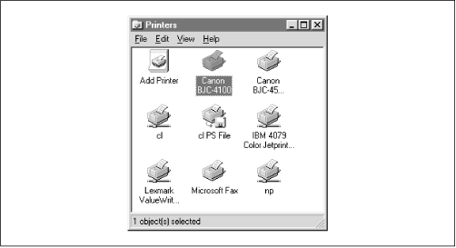
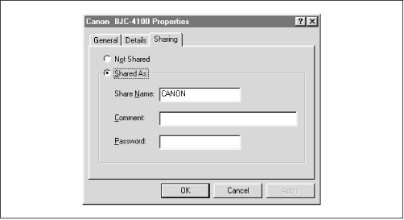
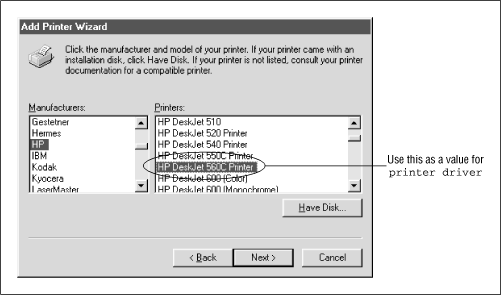

Using Samba
Robert Eckstein, David Collier-Brown, Peter Kelly1st Edition November 1999
1-56592-449-5, Order Number: 4495
416 pages, $34.95
|
|
|
|
|
Using SambaRobert Eckstein, David Collier-Brown, Peter Kelly1st Edition November 1999 1-56592-449-5, Order Number: 4495 416 pages, $34.95 |
7.2 Printing to Windows Client Printers
If you have printers connected to clients running Windows 95/98 or NT 4.0, those printers can also be accessed from Samba. Samba comes equipped with a tool called smbprint that can be used to spool print jobs to Windows-based printers. In order to use this, however, you need to set up the printer as a shared resource on the client machine. If you haven't already done this, you can reset this from the Printers window, reached from the Start button, as shown in Figure 7.7.
Figure 7.7: The Printers window
Select a printer that's locally connected (for example, ours is the Canon printer), press the right mouse button to bring up a menu, and select Sharing. This will give you the Sharing tab of the Printer Properties frame, as shown in Figure 7.8. If you want it available to everybody on your LAN as the Windows guest user, enter a blank password.
Figure 7.8: The Sharing tab of the printer
Once you've got this working, you can add your printer to the list of standard printers and Samba can make it available to all the other PCs in the workgroup. To make installation on Unix easier, the Samba distribution provides two sample scripts: smbprint and smbprint.sysv. The first works with BSD-style printers; the second is designed for System V printers.
7.2.1 BSD printers
There are two steps you need to have a BSD Unix recognize a remote printer:
Place an entry for the printer in the /etc/printcap file (or equivalent).
Place a configuration file in the /var/spool directory for the printer.
First, edit your /etc/printcap file and add an entry for the remote printer. Note that the input filter (
if) entry needs to point to the smbprint program if the machine is on Windows 95/98. The following set of lines will accomplish on a Linux machine, for example:laserjet:\ :sd=/var/spool/lpd/laser:\# spool directory:mx#0:\# maximum file size (none):sh:\# surpress burst header (no):if=/usr/local/samba/bin/smbprint:# text filterAfter that, you need to create a configuration file in the spool directory that you specified with the
sdparameter above. (You may need to create that directory.) The file must have the name .config and should contain the following information:
The last two parameters were set up in the Sharing dialog for the requested resource on the Windows machine. In this case, the .config file would have three lines:
server = phoenix service = CANON password = ""After you've done that, reset the Samba server machine and try printing to it using any standard Unix program.
7.2.2 System V printers
Sending print jobs from a System V Unix system is a little easier. Here, you need to get obtain the smbprint.sysv script in the /usr/local/samba/examples/printing directory and do the following:
Change the
server,service, andpasswordparameters in the script to match the NetBIOS machine, its shared printer service, and its password, respectively. For example, the following entries would be correct for the service in the previous example:server = phoenix service = CANON password = ""
Run the following commands, which create a reference for the printer in the printer capabilities file. Note that the new Unix printer entry
canon_ printeris named:# lpadmin -p canon_printer -v /dev/null -i./smbprint.sysv # enable canon_printer # accept canon_printerAfter you've done that, restart the Samba daemons and try printing to it using any standard Unix program. You should now be able to send data to a printer on a Windows client across the network.
7.2.3 Samba Printing Options
Table 7.2 summarizes the Samba printing options.
Table 7.2: Printing Configuration Options Option
Parameters
Function
Default
Scope
printing
bsd,sysv,hpux,aix,qnx,plp,softq, orlprngSets the print system type for your Unix system.
System dependent
Share
printable (print ok)boolean
Marks a share as a printing share.
noShare
printer (printer name)string (Unix printer name)
Sets the name of the printer to be shown to clients.
System dependent
Share
printer driverstring (printer driver name)
Sets the driver name that should be used by the client to send data to the printer.
None
Share
printer driver filestring (fully-qualified pathname)
Sets the name of the printer driver file.
None
Global
printer driver locationstring (network pathname)
Specifies the pathname of the share for the printer driver file.
None
Share
lpq cache timenumeric (time in seconds)
Sets the amount of time in seconds that Samba will cache the lpq status.
10Global
postscriptboolean
Treats all print jobs sent as postscript by prepending
%!at the beginning of each file.
noShare
load printersboolean
Automatically loads each of the printers in the printcap file as printing shares.
noGlobal
print commandstring (shell command)
Sets the Unix command to perform printing.
See below
Share
lpq commandstring (shell command)
Sets the Unix command to return the status of the printing queue.
See below
Share
lprm commandstring (shell command)
Sets the Unix command to remove a job from the printing queue.
See below
Share
lppause commandstring (shell command)
Sets the Unix command to pause a job on the printing queue.
See below
Share
lpresume commandstring (shell command)
Sets the Unix command to resume a paused job on the printing queue.
See below
Share
printcap name
(printcap)string (fully-qualified pathname)
Specifies the location of the printer capabilities file.
System dependent
Global
min print spacenumeric (size in kilobytes)
Sets the minimum amount of disk free space that must be present to print.
0Share
queuepause commandstring (shell command)
Sets the Unix command to pause a queue.
See below
Share
queueresume commandstring (shell command)
Sets the Unix command to resume a queue.
See below
Share
7.2.3.1 printing
The
printingconfiguration option tells Samba a little about your Unix printing system, in this case which printing parser to use. With Unix, there are several different families of commands to control printing and print statusing. Samba supports seven different types, as shown in Table 7.3.
Table 7.3: Printing Types Variable
Definition
BSD
Berkeley Unix system
SYSV
System V
AIX
AIX Operating System (IBM)
HPUX
Hewlett-Packard Unix
QNX
QNX Realtime Operating System (QNX)
LPRNG
LPR Next Generation (Powell)
SOFTQ
SOFTQ system
PLP
Portable Line Printer (Powell)
The value for this optio.n will be one of these seven options. For example:
printing = SYSVThe default value of this option is system dependent and is configured when Samba is first compiled. For most systems, the configure script will automatically detect the printing system to be used and configure it properly in the Samba makefile. However, if your system is a PLP, LPRNG, or QNX printing system, you will need to explicitly specify this in the makefile or the printing share.
The most common system types are BSD and SYSV. Each of the printers on a BSD Unix server are described in the printer capabilities file - normally /etc/printcap.
Setting the
printingconfiguration option automatically sets at least three other printing options for the service in question:command,lpqcommand, andlprmcommand. If you are running Samba on a system that doesn't support any of these printing styles, simply set the commands for each of these manually.7.2.3.2 printable
The printable option must be set to
yesin order to flag a share as a printing service. If this option is not set, the share will be treated as a disk share instead. You can set the option as follows:[printer1] printable = yes7.2.3.3 printer
The option, sometimes called
printername, specifies the name of the printer on the server to which the share points. This option has no default and should be set explicitly in the configuration file, even though Unix systems themselves often recognize a default name such aslpfor a printer. For example:[deskjet] printer = hpdkjet17.2.3.4 printer driver
The
printerdriveroption sets the string that Samba uses to tell Windows what the printer is. If this option is set correctly, the Windows Printer Wizard will already know what the printer is, making installation easier for end users by giving them one less dialog to worry about. The string given should match the string that shows up in the Printer Wizard, as shown in Figure 7.9. For example, an Apple LaserWriter typically usesAppleLaserWriter; a Hewlett Packard Deskjet 560C usesHPDeskJet560CPrinter.Figure 7.9: The Add Printer Wizard dialog box in Windows 98
Automatically configuring printer drivers with Samba is explained in greater detail in the section Section 7.1.7, Automatically Setting Up Printer Drivers," earlier in this chapter.
7.2.3.5 printer driver file
This global option gives the location of the Windows 95/98 printer driver definition file, which is needed to give printer drivers to clients using a Samba printer. The default value of this option is /usr/local/samba/lib/printers.def. You can override this default as shown below:
[deskjet] printer driver file = /var/printers/printers.defThis option is explained in greater detail in the section Section 7.1.7," earlier in this chapter.
7.2.3.6 printer driver location
This option specifies a specific share that contains Windows 95 and 98 printer driver and definition files. There is no default parameter for this value. You can specify the location as a network pathname. A frequent approach is to use a share on your own machine, as shown here:
[deskjet] printer driver location = \\%L\PRINTER$This option is also explained in greater detail in the section Section 7.1.7," earlier in this chapter.
7.2.3.7 lpq cache time
The global
lpqcachetimeoption allows you to set the number of seconds that Samba will remember the current printer status. After this time elapses, Samba will issue an lpq command (or whatever command you specify with thelpqcommandoption) to get a more up-to-date status. This defaults to 10 seconds, but can be increased if yourlpqcommandtakes an unusually long time to run or you have lots of clients. The following example resets the time to 30 seconds:[deskjet] lpq cache time = 307.2.3.8 postscript
The
postscriptoption forces the printer to treat all data sent to it as Postscript. It does this by prepending the characters%!at the beginning of the first line of each job. It is normally used with PCs that insert a^D(control-D or "end-of-file mark) in front of the first line of a PostScript file. It will not, obviously, turn a non-PostScript printer into a PostScript one. The default value of this options isno. You can override it as follows:[deskjet] postscript = yes7.2.3.9 print command, lpq command, lprm command, lppause command, lpresume command
These options tell Samba which Unix commands used to control and send data to the printer. The Unix commands involved are: lpr (send to Line PRinter), lpq (List Printer Queue), lprm (Line printer ReMove), and optionally lppause and lpresume. Samba provides an option named after each of these commands, in case you need to override any of the system defaults. For example, consider:
lpq command = /usr/ucb/lpq %pThis would set the
lpq commandto use /usr/ucb/lpq. Similarly:lprm command = /usr/local/lprm -P%p %jwould set the Samba printer remove command to /usr/local/lprm, and provide it the print job number using the
%jvariable.The default values for each of these options are dependent on the value of the
printingoption. Table 7.4 shows the default commands for each of the printing options. The most popular printing system is BSD.
Table 7.4: Default Commands for Various Printing Commands Option
BSD, AIX, PLP, LPRNG
SYSV, HPUX
QNX
SOFTQ
print commandlpr -r -P%p %slp -c -d%p %s; rm %slp -r -P%p %slp -d%p -s %s; rm %s
lpq commandlpq -P%plpstat -o%plpq -P%plpstat -o%plprm commandlprm -P%p %jcancel %p-%jcancel %p-%jcancel %p-%jlppause commandlp -i %p-%j -H hold(SYSV only)None None None lpresume commandlp -i %p-%j -H resume(SYSV only)None None qstat -s -j%j -rIt is typically not necessary to reset these options in Samba, with the possible exception of
command. This option may need to be explicitly set if your printing system doesn't have a-r(remove after printing) option on the printing command. For example:/usr/local/lpr -P%p %s; /bin/rm %sWith a bit of judicious programming, these smb.conf options can also used for debugging:
print command = cat %s >>/tmp/printlog; lpr -r -P%p %sFor example, this configuration can verify that files are actually being delivered to the Samba server. If they are, their contents will show up in the /tmp/printlog file.
After BSD, the next most popular kind of printing system is SYSV (or System V) printing, plus some SYSV variants for IBM's AIX and Hewlett-Packard's HP-UX. These system do not have an /etc/printcap file. Instead, the
printcapfileoption can be set to an appropriate lpstat command for the system. This tells Samba to get a list of printers from the lpstat command. Alternatively, you can set the global configuration optionprintcapnameto the name of a dummy printcap file you provide. In the latter case, the file must contain a series of lines such as:lp|print1|My Printer 1 print2|My Printer 2 print3|My Printer 3Each line names a printer, and provides aliases for it. In this example, the first printer is called
lp,print1, orMyPrinter1, whichever the user prefers to use. The first name will be used in place of%pin any command Samba executes for that printer.Two additional printer types are also supported by Samba: LPRNG (LPR New Generation) and PLP (Public Line Printer). These are public domain and Open Source printing systems, and are used by many sites to overcome problems with vendor-supplied software. In addition, the SOFTQ and QNX realtime operating systems are supported by Samba.
7.2.3.10 load printers
The
loadprintersoption tells Samba to create shares for all known printer names and load those shares into the browse list. Samba will create and list a printer share for each printer name in /etc/printcap (or system equivalent). For example, if your printcap file looks like this:[ 2][2] We have placed annotated comments off to the side in case you've never dealt with this file before.
lp:\ :sd=/var/spool/lpd/lp:\# spool directory:mx#0:\# maximum file size (none):sh:\# surpress burst header (no):lp=/dev/lp1:\# device name for output:if=/var/spool/lpd/lp/filter:# text filterlaser:\ :sd=/var/spool/lpd/laser:\# spool directory:mx#0:\# maximum file size (none):sh:\# surpress burst header (no):lp=/dev/laser:\# device name for output:if=/var/spool/lpd/lp/filter:# text filterand you specify:
load printers = yesthe shares
[lp]and[laser]will automatically be created as valid print shares when Samba is started. Both shares will borrow the configuration options specified in the[printers]section to configure themselves, and will be available in the browse list for the Samba server.7.2.3.11 printcap name
If the
printcapnameoption (also calledprintcap) appears in a printing share, Samba will use the file specified as the system printer capabilities file. This is normally /etc/printcap. However, you can reset it to a file consisting of only the printers you want to share over the network. The value must be a fully-qualified filename of a printer capabilities file on the server:[deskjet] printcap name = /usr/local/printcap7.2.3.12 min print space
The
minspaceoption sets the amount of spool space that must be available on the disk before printing is allowed. Setting it to zero (the default) turns the check off; setting it to any other number sets the amount of free space in kilobytes required. This option helps avoid having print jobs fill up the remaining disk space on the server, which may cause other processes to fail:[deskjet] min print space = 40007.2.3.13 queuepause command
This configuration option specifies a command that tells Samba how to pause a print queue entirely, as opposed to a single job on the queue. The default value depends on the printing type chosen. You should not need to alter this option.
7.2.3.14 queueresume command
This configuration option specifies a command that tells Samba how to resume a paused print queue, as opposed to resuming a single job on the print queue. The default value depends on the printing type chosen. You should not need to alter this option.
 |
 |
 |
| 7.1 Sending Print Jobs to Samba |
 | 7.3 Name Resolution with Samba |
Back to: Using Samba
© 1999, O'Reilly & Associates, Inc.